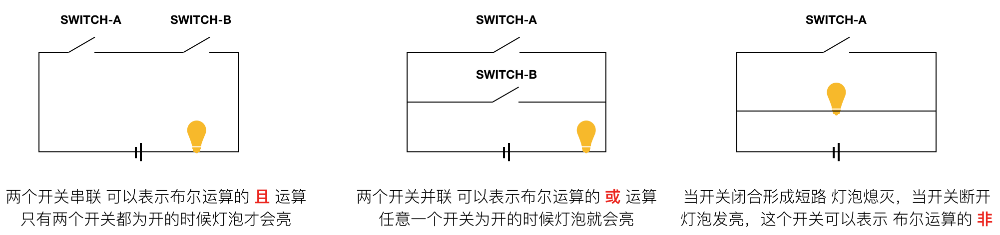

CPU 的工作原理
CPU的最重要的功能是计算，但是计算是CPU整个功能的其中之一，叫做逻辑计算模块(ALU)。基于整个CPU的功能，他还有寄存器 缓存 内存寻址 等功能模块。整体来讲分为两部分 1. 计算 2. 寄存器存储
1. 计算
CPU是通过集成电路完成的计算，且在计算机中使用的是同意二进制进行对数字的表达与计算，这是由于二进制的计算简单，越简单越通用。之前分析过计算机电路中大量采用的三极管，三极管可当作一个开关，这个开关的 开 闭 状态可以通过一根导线来控制，这个特性来表达二进制是再好不过的了。
1.1 二进制
我们常用的是十进制，要理解二进制就需要理解数学上的 进制 。比如十进制，表达不同数字的符号有0-9 十个符号，没有位的情况下不能表达更多的数字，对数字进行扩展 增加数字的位数，则可以使数字符号所能表达的情况倍增。数字的变化过程需要一个映射关系，也就是 1+1 = 2 ，这样数字就可以进行计算了，当遇到 位数上的计算不能用 单个位上的 符号表示的时候就需要进位。
这是十进制的表达 计算的基础。单个位的数学符号订单，多个位实现数学符号扩展，增加数学符号可表达的容量，1+1=2 定义计算规则，结合进位 实现了计算功能。
同样的原理可用于 二进制 八进制 十六进制等…
计算机在早期的确有使用三进制 五进制 之类的形式，但是二进制是最简单的形式，使用电路电流来表达起来会简单一些，也不易出错。
1.2 逻辑门
在计算机中使用二进制进行计算，困难在于，如何让机器实现加这个操作。其实这些操作是基于 布尔逻辑 来实现的，布尔逻辑 定义个一个新增的 数字间的映射关系 或 且 非，在二进制中的布尔计算结果如下
| A | B | 或 | 且 |
|---|---|---|---|
| 1 | 0 | 1 | 0 |
| 0 | 1 | 1 | 0 |
| 1 | 1 | 1 | 1 |
| 0 | 0 | 0 | 0 |
| A | 非 |
|---|---|
| 1 | 0 |
| 0 | 1 |
或(|): 两个值中有一个为 真(1) 则结果为真(1)，且(&): 两个值都为真(1) 则结果为真，非(^): 若值为真 则 结果为 假(0) 若值为假 则结果为真(1)，这样的计算映射过程可以使用电路来很好的表达，如下图：

晶体管中的实现形式是通过输入电流来控制电流大小，其对应的元器件表达方式如下图：
1.3 逻辑运算
基于以上的功能，可以考虑计算二进制的事情了，在计算中存在两个重要的事情 当前位的值 进位。二进制在这方面就简单很多很多了，可以分析下二进制的加法运算中的一些规律，这里仅仅关注其中一位的变化
| A | B | 结果 | Sum 当前位余数 | Carry 进位 |
|---|---|---|---|---|
| 00 | 00 | 00 | 0 | 0 |
| 01 | 00 | 01 | 1 | 0 |
| 01 | 01 | 10 | 0 | 1 |
从以上结果中可看出规律，当前位(Sum)的值的结果是 若两个位的值相等则为 0 若两个位的值不相等则为 1。这个在我们熟悉的高级编程语言中是简单的 位运算中有 异 运算，但是这里的基本电器逻辑门中只有 或 且 非 三种门，为了不使问题复杂化，这里应该向办法在这三个门的基础上设计一个 异 门 。需要对这个映射过程进行分析
| A | B | R |
|---|---|---|
| 1 | 0 | 1 |
| 0 | 1 | 1 |
| 1 | 1 | 0 |
| 0 | 0 | 0 |
最总可以得到一个映射方式 R = (A & !B) | (B & !A) 基于这个规则 可以基于 基础的逻辑门来组成一个 异 门，其电路图如下
其次是进位 Carry的计算，Carry的计算相对简单，两个数进行 且 运算就可以了，最终我们的输出是 Sum 和 Carry 两个值，到这里实现的只是一个半加器 若要实现多位数字相加 的 全加器 则我们的模型是，输入 A B Carry 输出 Sum Carry 。
所以需要在半加器的电路中进行改造 将 进位的情况考虑进来。
先观察数据
|A|B|C(in)|<>|S(ab)|S(out)|–|C(ab)|C(out)|
|–|–|–|–|–|–|–|
|1|0|0|<>|1|1|–|0|0|
|1|1|0|<>|0|0|–|1|1|
|0|0|0|<>|0|0|–|0|0|
|0|1|0|<>|1|1|–|0|0|
|1|0|1|<>|1|0|–|0|1|
|1|1|1|<>|0|1|–|1|1|
|0|0|1|<>|0|1|–|0|0|
|0|1|1|<>|1|0|–|0|1|
在增加了 进位的数值后 Sum 的值会受其影响，经过观察 S(ab) C(in) 与 S(out) 的值可以得出以下规律 S(out) = S(ab) ^ C(in) 展开S(ab) 也就是 S(out) = A ^ B ^ C(in)
对于进位 Carray 其值受 C(in) C(ab) 以及 S(ab) 的影响，(进位只有是否进位的情况 不存在在一个位上需要近两位的情况)，其中重要的是 C(ab) 他是当前位的进位结果，C(in) 是上一位的进位，这里其相当于一个被加数，与 S(ab) 共同决定是否进位。观察数据 不难发现，如果 C(ab) 需要进位 则一定有进位，若C(ab) 不需要进位，则是否进位由 S(ab) 与 C(in) 决定是否进位，最终得出规律 C(out) = C(ab) | C(in) & S(ab) 展开得到 C(out) = A & B | C(in) & (A ^ B)
得到最终的结果，先用流程图进行表示如下
可以基于这个流程来实现 全加器 的电路图
以上实现的一个 CPU 的加法计算，上面的电路仅表示了一个位，将其扩大到多位 比如 i7 的64位，下图是一个支持4位的二进制数计算的运算单元。
3. 寄存器
寄存器作为CPU的组成部分，也是一个比较大的知识领域，目前并没有研究其细节，只能笼统的概括下 对其有一个形象的认识。
程序的运行本质是计算过程，CPU完成了计算部分，计算需要数据 这个数据存储在内存中，CPU对内存进行读写。CPU通过内存寻址的方式访问内存，他们之间通过北桥芯片的电路进行通信。寄存器是集成在CPU内部的，CPU从寄存器中读写数据比内存中读写数据要快的多，寄存器在这里充当了内存的缓存作用，数据从内存读到寄存器提供给CPU进行计算。一般CPU还存在 一个三级缓存 (L1 L2 L3 cache)，这个是内存与寄存器之间的一个缓冲区域，用来弥补CPU 与 内存 间的速度差异。
一般常用寄存器根据功能划分为 数据寄存器 变址寄存器 指针寄存器 段寄存器
数据寄存器 主要提供给程序使用，累加寄存器:用于计算中的乘除操作;计数寄存器 控制程序中的循环次数;数据寄存器 :;基地址寄存器:;
指针寄存器 主要存放 内存堆栈偏移量，其数据主要用于 内存堆栈的访问。
汇编代码 可以直观的查看CPU的数据变化过程
1 | MOV AX,12 # 将数字 12 写入寄存器 AX |
参考链接中有一个在线的简单汇编代码执行器，可以直观的感受到汇编对寄存器的操作过程。
接下来要研究下内存的结构，以及CPU是如何进行寻址的，进一步理解C语言。
关于CPU对内存的寻址过程
CPU对内存数据的读写主要通过 地址总线 指令总线 数据总线 来完成的。通过地址总线与内存通信 先确定内存数据的存储地址 指令总线 用来确定操作是读数据 还是写数据，内存根据接收的指令信息确定操作，如果是读数据，根据地址读取数据并通过地址总线返回数据，如果是些数据 通过地址总线接收数据 并通过地址将数据写入，具体的电路实现可以参考 内存 的工作原理
TODO CPU时钟
其实CPU在进行一次计算做了很多事情，这些事情还要在规定的时间内完成，这就需要CPU时钟 进行控制 也就是我们常看到的CPU的频率 ，比如目前的电脑CPU频率是 2.2GHz